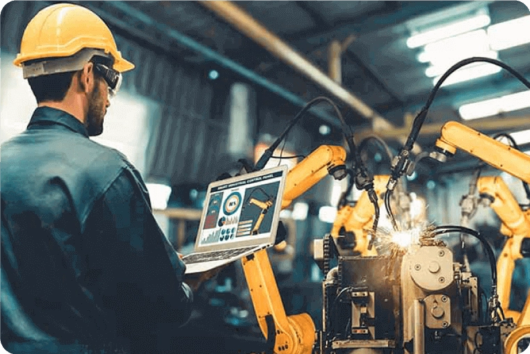
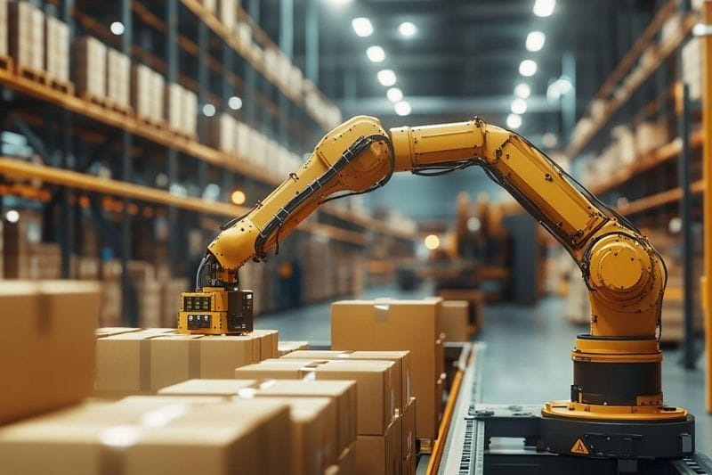

Tecnologias Emergentes na Indústria 4.0
A revolução da Indústria 4.0 introduziu uma transformação digital profunda, marcada pela integração de tecnologias que redefinem a produção, aumentam a eficiência operacional e fortalecem a competitividade industrial. Esta nova abordagem transforma não apenas os métodos de produção, mas também a gestão de dados e a interação entre máquinas e pessoas em ambientes altamente conectados.
Indústria 4.0
A Indústria 4.0 representa a quarta revolução industrial, um conceito que surgiu na Alemanha em 2011 para descrever a integração de tecnologias digitais avançadas com processos produtivos tradicionais.

Automação Robotizada
Uma linguagem de alto nível similar ao Pascal, permitindo programação mais complexa e algoritmos sofisticados para controle industrial.

Industrial Internet of Things (IIoT)
A Internet das Coisas Industrial (Industrial Internet of Things) conecta através de PLCs e HMIs máquinas, dispositivos e sensores de uma rede integrada,promovendo automação e troca de dados em tempo real.
Machine learning e Inteligência Artificial
A inteligência artificial(IA) e o aprendizado de máquina (ML) desempenham um papel crucial na análise de dados industriais. Estas tecnologias permitem prever falhas, otimizar processos e identificar padrões em grandes volumes de dados.